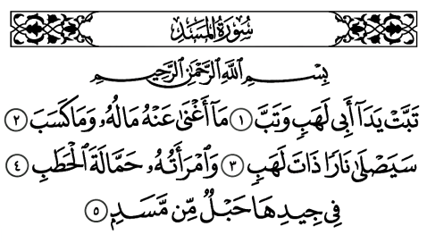

1 - En Arabe

2 - Traduction rapprochée
1. Que périssent les deux mains d'Abu-Lahab et que lui-même périsse.
2. Sa fortune ne lui sert à rien, ni ce qu'il a acquis.
3. Il sera brûlé dans un Feu plein de flammes.
4. de même sa femme, la porteuse de bois,
5. à son cou, une corde de fibres.